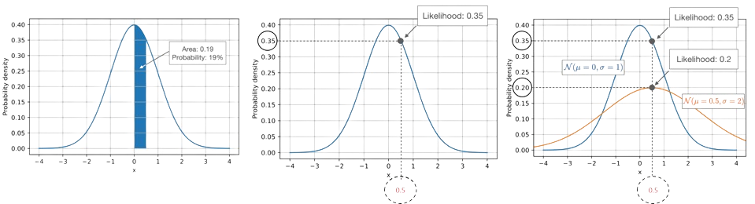
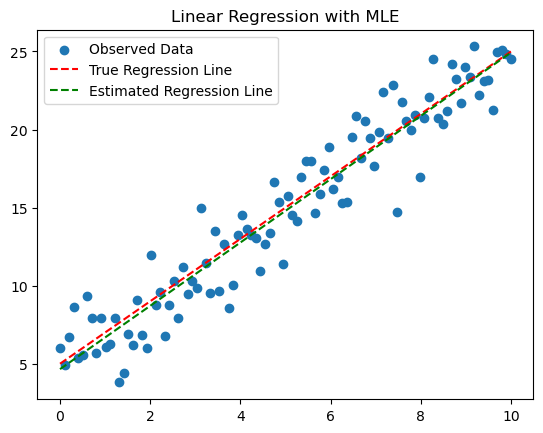

In our study of random variables, we've encountered various distributions, each characterized by parameters—numbers that define the distribution's behavior. Typically, we either have these parameter values explicitly provided or can infer them from our understanding of the data-generating process.
However, what if we lack knowledge of these parameters and can't deduce them from our expertise? What if, instead of knowing the random variables themselves, we possess numerous instances of data generated from the same underlying distribution?
Here, we delve into formal methodologies for estimating parameters based on data. These techniques are pivotal in artificial intelligence, as they underpin the workings of modern machine learning algorithms.
Parameters
Before delving into parameter estimation, let's refresh our understanding of parameters. In a given model, parameters are the numerical values that define the actual distribution. For instance, in a Bernoulli random variable, the parameter is a single value denoted as \( p \). In the case of a Uniform random variable, parameters are represented as \( a \) and \( b \), defining the minimum and maximum values. Here's a summary of various random variables and their corresponding parameters. Going forward, we'll denote the parameters collectively as \( \theta \).
Distribution
Parameters
Forumla
Explanation
Bernoulli (\(p\))
\(\theta = p\)
\(P(X= k) = p^k (1-p)^{1-k}\)
This function gives the probability of getting a particular outcome \( k \) (0 or 1) in a single Bernoulli trial with parameter \( p \).
Poisson (\(\lambda\))
\(\theta = \lambda \)
\(P(X=k) = \frac{e^{-\lambda } \lambda^k}{k!}\)
This function calculates the probability of observing \( k \) events in a fixed interval of time or space, given the average rate of occurrence \( \lambda \).
Uniform (\(a, b\))
\(\theta = a, b\)
\(f(x) = \frac{1}{b-a}\)
This function represents a uniform distribution between the values \( a \) and \( b \), where all values within this range are equally likely.
This function describes the probability density of a continuous random variable following a normal distribution with mean \( \mu \) and variance \( \sigma^2 \).
\(Y = mX +b\)
\(\theta = (m, b)\)
\(\)
Not a probability distribution function, but a linear equation representing a straight line with slope \( m \) and y-intercept \( b \).
In real-world scenarios, the true parameters of a model are often unknown, but we have the opportunity to observe data. In the following sections, we'll delve into methodologies for utilizing data to estimate these model parameters.
It turns out there isn't just one way to estimate the value of parameters. There are two main approaches:
Maximum Likelihood Estimation (MLE) and
Maximum A Posteriori (MAP)
Both MLE and MAP approaches rely on the assumption that your data consist of IID (independently and identically distributed) samples, denoted as \( X_1, X_2, \ldots, X_n \), where each \( X_i \) is independent and drawn from the same distribution.
Maximum Likelihood Estimation (MLE)
Maximum Likelihood Estimation (MLE) is a statistical method used to estimate the parameters of a statistical model. The fundamental idea behind MLE is to find the values of the model parameters \(\theta\) that maximize the likelihood of observing the given data. In other words, MLE seeks the parameter values that make the observed data most probable under the assumed statistical model.
Key concepts of MLE:
Likelihood Function:
We assume that our data are identically distributed, meaning they must adhere to either the same probability mass function (if discrete data) or the same probability density function (if continuous data). To simplify discussions on parameter estimation, we'll use the notation \( f(X|\theta) \) to denote this shared PMF or PDF. This notation is notable in two aspects: firstly, it includes a conditional on \( \theta \), indicating that the likelihood of different values of \( X \) depends on the parameter values; secondly, we'll use the same symbol \( f \) for both discrete and continuous distributions.
Likelihood: It is refered as the probability of observing the given data under a specific set of parameter values in a statistical model. It's distinct from "probability" in that probability typically refers to the chance of future events occurring based on known parameters, while likelihood focuses on assessing how well the observed data fit with different parameter values.
In the context of discrete distributions, likelihood is synonymous with the joint probability of the observed data. This means it represents the probability of observing the entire dataset given specific parameter values.
For continuous distributions, likelihood pertains to the joint probability density of the observed data. This signifies the probability density of observing the entire dataset under certain parameter values.
What is the difference between likelihood and probability?:

Using the term probability, we calculate how probable (or likely) it is to draw a sample from a given distribution with certain parameters. For example, considering a continuous distribution like the normal distribution, we compute the probability as the area under the curve for a given range of values for the data \(x\). We do this by integrating the probability density function with fixed parameters: for the normal distribution, these parameters are the mean and standard deviation. So the probability of drawing a sample \(x\) with a value between 0 and 0.5 for a standard normal distribution (mean 0 and standard deviation 1), that is,
\(Pr(0 < x< 0.5|\theta) = \int_0^{0.5} p(x|\theta) dx\), where \(p(x|\theta)\) is the probability density. On the other hand, the likelihood \(L(X|\theta)\), computes how likely the parameters are given the observed data – in a practical context, we change the parameters of the distribution and see how it affects the likelihood. The figure on the second (middle) hand side of the above image, illustrates how we can obtain the likelihood of a fixed data point \(x=0.5\). Notice the relationship between likelihood and probability density: \(L(\theta | X) = p(X|\theta)\). While the values are the same, the concepts are different. With probabilities (or probability densities), we assume given parameters and compute the probabilities in the context of sampling from a distribution. On the other hand, when we consider likelihoods, we regard the data as fixed and vary the parameters of the distribution. In many contexts, we are interested in finding the parameters that maximize the likelihood. In the last figure (last one) in the above image, the likelihood of a fixed data point \(x=0.5\) for two different normal distributions are compared.
Since we assumed each data point is independent, the likelihood of all our data is the product of the likelihood of each data point. The likelihood function is defined as the product of the probability density functions for each observation.
The likelihood function, denoted as \(L(\theta)\), is a measure of how well t21he model explains the observed data for a given set of parameter \(\theta\).
It is defined as the joint probability (or probability density) of the observed data given the parameters:
$$L(\theta) = \underset{i=1}{\overset{n}{\Pi}} f(X | \theta), $$
where \(X\) is the observed data. The likelihood of our data varies for different parameter values. When the parameters are correct, the likelihood of observing the data is higher compared to when they are incorrect. Therefore, we express likelihood as a function of our parameters (\( \theta \)).
Log-Likelihood Function:
In practice, it is common to work with the log-likelihood function \(l(\theta)\), which is the natural logrithm of the likelihood function.
Maximizing the log-likekihood is equivalent to Maximizing the likelihood, and it simplifies computations.
Parameter Estimation: In maximum likelihood estimation (MLE) our goal is to chose values of our parameters \(\theta\) that maximizes the likelihood function from the previous section. Normally \(\hat{\theta}\) reprsents the best values for our parameters. FOrmally, MLE assume that
$$\hat{\theta}_{\text{MLE}} = \underset{\theta}{{\text{arg}~\text{max}}} ~L(\theta), $$
or
$$\hat{\theta}_{\text{MLE}} = \underset{\theta}{{\text{arg}~\text{max}}} ~l(\theta).$$
Here "Arg max" is short for argument of the maximum. The arg max of a function is the value of the domain at which the function is maximized. It applies for domains of any dimension. A cool property of arg max is that since log is a monotonic function, the arg max of a function is
the same as the arg max of the log of the function! That’s nice because logs make the math simpler.
If we find the arg max of the log of likelihood, it will be equal to the arg max of the likelihood. Therefore, for MLE, we first write the log likelihood function (LL)
To use a maximum likelihood estimator, first write the log likelihood of the data given your parameters. Then chose the value of parameters that maximize the log likelihood function. Argmax can be computed in many ways. All of the methods that we cover in this class require computing the first derivative of the function.
Optimization:
Typically, optimization algorithms (such as gradient descent, Newton's method, or other numerical optimization techniques) are employed to find the maximum of the likelihood function.
In some cases, analytical solutions exist, making it possible to find the values of the parameters directly.
1. Bernoulli MLE Estimation
In Bernoulli Maximum Likelihood Estimation (MLE), we aim to estimate the parameter \( p \), which represents the probability of success in a single Bernoulli trial.
Given a set of \( n \) independent Bernoulli trials with outcomes \( x_1, x_2, \ldots, x_n \), where \( X_i \) is either 0 (failure) or 1 (success), the likelihood function is expressed as:
\[ L(p) = L(\theta) = \underset{i=1}{\overset{n}{\Pi}} p^{X_i} (1 - p)^{1- X_i} \]
To find the Maximum Likelihood Estimate (MLE) for \( p \), we maximize this likelihood function with respect to \( p \). This typically involves taking the derivative of \( L(p) \) with respect to \( p \), setting it equal to zero, and solving for \( p \). However, in the case of the Bernoulli distribution, the MLE for \( p \) is simply the sample mean of the observed data:
\[ \hat{p} = \frac{1}{n} \sum_{i=1}^{n} X_i \]
This means that the MLE for \( p \) is the proportion of successes observed in the data. We can derive the equaion as follows:
\[
\begin{align*}
L(\theta) &= \underset{i=1}{\overset{n}{\Pi}} p^{X_i} (1 - p)^{1- X_i} \\
LL(\theta) &= \sum_{i=1}^n \log p^{X_i} (1 - p)^{1- X_i} \\
&= \sum_{i=1}^n \left[X_i (\log p)+ (1-X_i)\log(1-p)\right] \\
&= Y \log p +(n-Y)\log(1-p)
\end{align*}
\]
where \(Y=\sum_{i=1}^n X_i\). So we have a formula for the log likelihood. Now we simply need to chose the value of p that maximizes our log likelihood. As your calculus teacher probably taught you, one way to find the value which maximizes a function that is to find the first derivative of the function and set it equal to 0.
\[
\frac{d}{dp} LL(\theta) = \frac{d}{dp} \left( Y \log p +(n-Y)\log(1-p) \right) = \frac{Y}{p} - \frac{n - Y}{1 - p}
\]
and setting this derivative equal to zero and solving for p:
Setting this derivative equal to zero and solving for \( p \):
\[
\frac{Y}{p} - \frac{n - Y}{1 - p} = 0
\]
Multiply both sides by \( p(1 - p) \) to clear the fractions:
\[
Y(1 - p) - p(n - Y) = 0
\]
Expand and simplify:
\[
Y - Yp - pn + Yp = 0
\]
\[
Y - pn = 0
\]
Finally, solve for \( p \):
\[
p = \frac{Y}{n}
\]
So, the maximum likelihood estimate (MLE) for \( p \) in the Bernoulli distribution is:
\[
\hat{p} = \frac{Y}{n} = \frac{1}{n} \sum_{i=1}^n X_i
\]
where \( Y \) is the number of successes observed in the data and \( n \) is the total number of observations.
2. Normal MLE Estimation
In Normal Maximum Likelihood Estimation (MLE), we aim to estimate the parameters \( \mu \) and \( \sigma^2 \) of a normal distribution.
Given a set of \( n \) independent observations \( x_1, x_2, \ldots, x_n \) from a normal distribution with unknown mean \( \mu \) and variance \( \sigma^2 \), the likelihood function is expressed as:
\[ L(\mu, \sigma^2) = \prod_{i=1}^{n} \frac{1}{\sqrt{2\pi\sigma^2}} \exp\left(-\frac{(X_i - \mu)^2}{2\sigma^2}\right) \]
Taking the natural logarithm of the likelihood function (log-likelihood) for convenience:
\[ LL(\mu, \sigma^2) = \sum_{i=1}^{n} \left[ -\frac{1}{2} \log(2\pi\sigma^2) - \frac{(X_i - \mu)^2}{2\sigma^2} \right] \]
To find the Maximum Likelihood Estimates (MLE) for \( \mu \) and \( \sigma^2 \), we maximize this log-likelihood function with respect to \( \mu \) and \( \sigma^2 \), separately.
For \( \mu \), we differentiate the log-likelihood function with respect to \( \mu \), set it equal to zero, and solve for \( \mu \):
\[ \frac{d}{d\mu} LL(\mu, \sigma^2) = 0 \]
\[ \frac{1}{\sigma^2} \sum_{i=1}^{n} (X_i - \mu) = 0 \]
\[ \sum_{i=1}^{n} (X_i - \mu) = 0 \]
\[ \sum_{i=1}^{n} X_i - n\mu = 0 \]
\[ \mu = \frac{1}{n} \sum_{i=1}^{n} X_i \]
For \( \sigma^2 \), we differentiate the log-likelihood function with respect to \( \sigma^2 \), set it equal to zero, and solve for \( \sigma^2 \):
\[ \frac{d}{d\sigma^2} LL(\mu, \sigma^2) = 0 \]
\[ \frac{-n}{2\sigma^2} + \frac{1}{2(\sigma^2)^2} \sum_{i=1}^{n} (X_i - \mu)^2 = 0 \]
\[ \frac{1}{\sigma^2} = \frac{1}{n} \sum_{i=1}^{n} (X_i - \mu)^2 \]
\[ \sigma^2 = \frac{1}{n} \sum_{i=1}^{n} (X_i - \mu)^2 \]
So, the Maximum Likelihood Estimates (MLE) for a normal distribution are:
\[ \hat{\mu} = \frac{1}{n} \sum_{i=1}^{n} X_i \]
\[ \hat{\sigma}^2 = \frac{1}{n} \sum_{i=1}^{n} (X_i - \hat{\mu})^2 \]
Example:
Consider a simple example of coin flipping, where we want to estimate the probability of getting heads. If we observe a sequence of coin flips (data), the likelihood function would be the product of the probabilities of obtaining the observed outcomes (head or tails) under the assumed probability parameter \(\theta\) that maximizes this likelihood.
Mathematical Notation:
Assume you have a biased coin, and you want to estimate the probability of getting heads (H). Your model parameter is the probability of heads, denoted as "p."
Define the Likelihood Function: The likelihood function is the probability of observing your data given the parameter. For a coin flip, it follows a Bernoulli distribution. The likelihood function is then:
$$L(p) = p^k * (1-p)^{n-k} $$
where \(k\) is the number of heads observed, \(n\) is the total number of coin flips.
Maximize the Likelihood: Take the logarithm of the likelihood function (log-likelihood) for easier calculations:
$$ \log L(p) = k \log(p) + (n-k) \log(1-p) $$
To find the MLE, differentiate the log-likelihood with respect to \(p\), set it to zero, and solve for \(p\).
Simple coin tossing example: Suppose you flip the coin 10 times and observe 7 heads (\(k=7\)). The likelihood function becomes:
$$ L(p) = p^7 * (1-p)^3 $$
Taking the log-likelihood:
$$ \log L(p) = 7 \log(p) + 3 \log(1-p) $$
Differentiate and set to zero:
$$ \frac{d}{dp} \log L(p) = \frac{7}{p} - \frac{3}{1-p} = 0 \Rightarrow p = \frac{7}{10} $$
In this way, MLE helps find the parameter value (probability of heads in this case) that maximizes the likelihood of observing the given data (7 heads in 10 coin flips).
Maximum A Posteriori (MAP)
In Maximum A Posteriori (MAP) estimation, we aim to estimate the parameters of a statistical model by maximizing the posterior probability of the parameters given the observed data.
Bayes' theorem states:
\[ P(\theta | X) = \frac{P(X | \theta) \cdot P(\theta)}{P(X)} \]
where:
\( P(\theta | X) \) is the posterior probability of the parameters given the data \( X \),
\( P(X | \theta) \) is the likelihood of the data given the parameters,
\( P(\theta) \) is the prior probability distribution of the parameters, and
\( P(X) \) is the marginal likelihood or evidence, which is the probability of observing the data.
In MAP estimation, we choose the parameters \( \theta \) that maximize the posterior probability \( P(\theta | X) \).
Mathematically, this is expressed as:
\[ \hat{\theta}_{\text{MAP}} = \arg \max_{\theta} P(\theta | X) \]
In practice, we often work with the logarithm of the posterior probability to simplify calculations:
\[ \hat{\theta}_{\text{MAP}} = \arg \max_{\theta} \log P(\theta | X) \]
MAP estimation combines information from the observed data (likelihood) with prior knowledge or beliefs about the parameters (prior distribution). This approach is particularly useful when dealing with limited data or when incorporating domain expertise into the parameter estimation process.
Example: 2
Let's consider an example of estimating the bias of a coin using MAP estimation.
Suppose we have a biased coin, and we want to estimate the probability \( p \) of it landing heads. We flip the coin \( n \) times and observe \( k \) heads and \( n - k \) tails.
First, let's define our model:
Likelihood: We model the outcomes of the coin flips using a binomial distribution, where the likelihood of observing \( k \) heads given \( n \) flips and probability \( p \) is given by \( P(k | n, p) = \binom{n}{k} p^k (1-p)^{n-k} \).
Prior: We assume a prior distribution for the bias \( p \). For simplicity, let's assume a Beta distribution, which is a conjugate prior to the binomial likelihood. We choose the Beta distribution with parameters \( \alpha \) and \( \beta \), which represent our initial beliefs about the bias of the coin.
The MAP estimate of \( p \) is then obtained by maximizing the posterior probability \( P(p | k, n, \alpha, \beta) \), which is proportional to the product of the likelihood and prior:
\[ P(p | k, n, \alpha, \beta) \propto P(k | n, p) \cdot P(p | \alpha, \beta) \]
To maximize the posterior probability, we take the logarithm of the posterior probability and find its maximum:
\[ \log P(p | k, n, \alpha, \beta) = \log P(k | n, p) + \log P(p | \alpha, \beta) \]
We can then use optimization techniques (e.g., gradient descent, Newton's method) to find the value of \( p \) that maximizes the logarithm of the posterior probability, giving us the MAP estimate of \( p \).
In summary, MAP estimation allows us to combine our prior beliefs about the bias of the coin with the observed data to obtain an estimate of the bias that reflects both the data and our prior knowledge. This approach is particularly useful when we have limited data or when we want to incorporate domain expertise into the estimation process.
Maximum Likelihood Estimation (MLE) in Python
import numpy as np
import pandas as pd
import matplotlib.pyplot as plt
from scipy.optimize import minimize
# Generate synthetic data for linear regression
np.random.seed(42)
true_slope = 2
true_intercept = 5
x = np.linspace(0, 10, 100)
y_true = true_slope * x + true_intercept
noise = np.random.normal(0, 2, size=len(x))
y_observed = y_true + noise
# Create a DataFrame
df = pd.DataFrame({'X': x, 'Y': y_observed})
df.head()
The log-likelihood function for linear regression with normally distributed errors is typically expressed as follows:
$$\text{Log-liklihood} = -\frac{1}{2} \sum_{i=1}^n \left(\frac{(y_i - (m X_i +b))^2}{\sigma^2} +\text{log}(2 \pi \sigma^2)\right)$$
where:
`n` is the number of observations.
\(y_i\) is the observed response for the i-th observation, and
\(X_i\) is the corresponding predictor variable for the i-th observations
\(m\) is the slope of regression line
\(b\) is the intercept of the regression line
\(\sigma\) is the standard deviation of the normally distributed errors.
# Define the likelihood function for linear regression
def linear_regression_likelihood(params, data):
slope, intercept, sigma = params
y_pred = slope * data['X'] + intercept
residuals = data['Y'] - y_pred
ll = -0.5 * np.sum((residuals / sigma) ** 2 + np.log(2 * np.pi * sigma ** 2))
return -ll # Negative log-likelihood for minimization
# Initial guess for parameters
initial_params = [1, 1, 1]
# Use scipy's minimize function to find MLE for linear regression
result = minimize(linear_regression_likelihood, initial_params, args=(df,), method='L-BFGS-B')
# Extract MLE estimates
estimated_slope, estimated_intercept, estimated_sigma = result.x
# Plot the results
plt.scatter(df['X'], df['Y'], label='Observed Data')
plt.plot(x, y_true, label='True Regression Line', color='red', linestyle='--')
plt.plot(x, estimated_slope * x + estimated_intercept, label='Estimated Regression Line', color='green', linestyle='--')
plt.legend()
plt.title('Linear Regression with MLE')
plt.show()
# Print results
print(f"True Slope: {true_slope}, True Intercept: {true_intercept}")
print(f"Estimated Slope: {estimated_slope:.4f}, Estimated Intercept: {estimated_intercept:.4f}, Estimated Noise Sigma: {estimated_sigma:.4f}")

Linear regression
MAP in python
Let's solve a simple example problem of estimating the bias of a coin using MAP estimation in Python.
Suppose we have flipped a coin 10 times and observed 6 heads and 4 tails. We want to estimate the bias \( p \) of the coin using MAP estimation, assuming a Beta prior distribution with parameters \( \alpha = 2 \) and \( \beta = 2 \).
Here's how we can solve this problem using Python:
import numpy as np
from scipy.stats import beta
import math
# Observed data
n_flips = 10
n_heads = 6
n_tails = n_flips - n_heads
# Prior parameters
alpha = 2
beta_param = 2
# Likelihood function (binomial)
def likelihood(p):
return math.comb(n_flips, n_heads) * p**n_heads * (1-p)**n_tails
# Prior distribution (Beta)
def prior(p):
return beta.pdf(p, alpha, beta_param)
# Posterior distribution (proportional to likelihood * prior)
def posterior(p):
return likelihood(p) * prior(p)
# Find MAP estimate by maximizing the posterior
p_values = np.linspace(0, 1, 1000)
map_estimate = p_values[np.argmax(posterior(p_values))]
print("MAP Estimate of Bias (p):", map_estimate)
This code defines the likelihood function, prior distribution, and posterior distribution. We then use numerical optimization to find the value of \( p \) that maximizes the posterior probability, giving us the MAP estimate of the bias \( p \).
The MAP estimate of the bias \( p \) based on the observed data is approximately 0.5836. This estimate provides us with the most likely value of the bias \( p \) given the data and our prior beliefs about its distribution.
Now let's demonstrates how to plot the likelihood, prior, and posterior distributions for the coin bias estimation problem:
# Plotting the likelihood, prior, and posterior distributions
p_values = np.linspace(0, 1, 1000)
likelihood_values = [likelihood(p) for p in p_values]
prior_values = [prior(p) for p in p_values]
posterior_values = [posterior(p) for p in p_values]
plt.figure(figsize=(10, 6))
plt.plot(p_values, likelihood_values, label='Likelihood', color='blue')
plt.plot(p_values, prior_values, label='Prior', color='green')
plt.plot(p_values, posterior_values, label='Posterior', color='red')
plt.xlabel('Bias (p)')
plt.ylabel('Density')
plt.title('Likelihood, Prior, and Posterior Distributions')
plt.legend()
plt.grid(True)
plt.show()